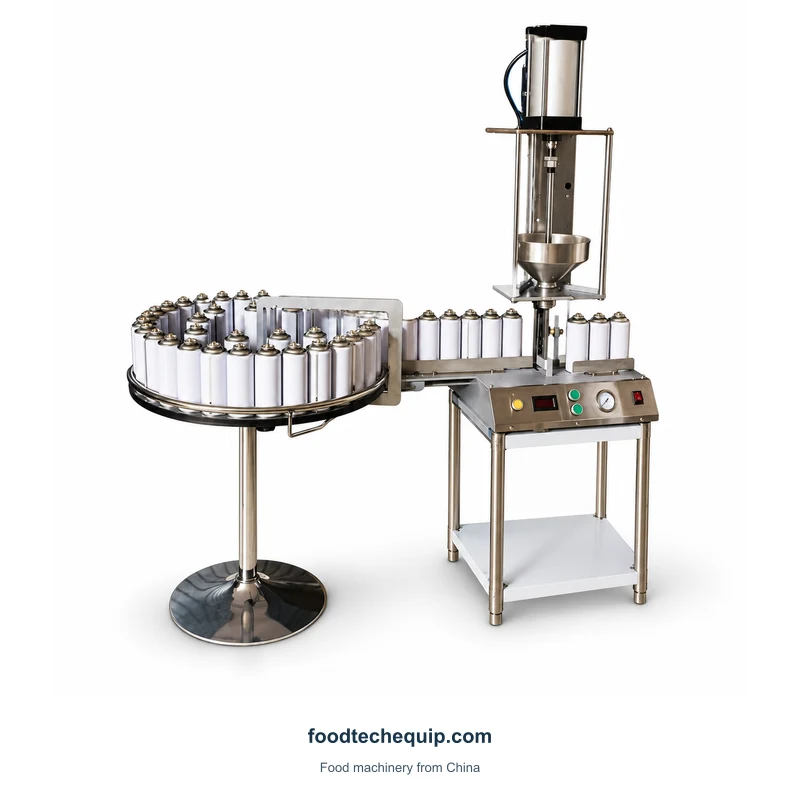
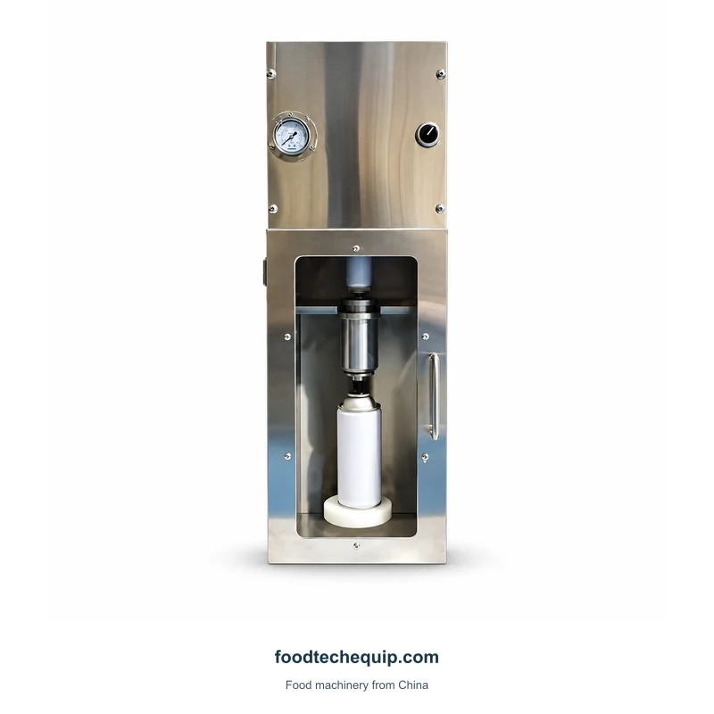
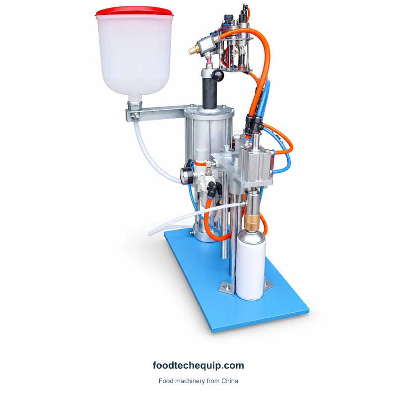

Llenado de pintura en aerosol
Máquina llenadora continua de pintura en aerosol
Equipo de llenado de pintura en aerosol con mesa circular para botes y bastidor de soporte.
Ver equipo
Selecciona la imagen para verla más grande.
Una unidad cerrada de llenado de pintura en aerosol con manómetro y acceso frontal.
Selección de equipos · Guía de instalación · Soporte remoto
Explorar información del producto ↓Para la configuración 200, especifique la formulación de pintura, el ensamblaje de lata y válvula y la operación requerida. Incluya los requisitos relacionados con el área peligrosa y la presión identificados en la evaluación de su sitio.
Cómo preparar una consulta de equipo ↗| Parámetro | Valor | Unidad | Configuración |
|---|---|---|---|
| Número de cabezales de llenado | 1 | — | 200 |
| Altura de botella aplicable | 300 | mm | 200 |
| Diámetro de botella aplicable | 50-110 | mm | 200 |
| Tasa de llenado | 10-29 | botellas/min | 200 |
| Volumen de llenado | 200 | mL | 200 |
Mantenga el breve proceso de pintura en aerosol separado del llenado de alimentos. Identifique la operación exacta solicitada, el conjunto de lata y válvula y los requisitos de evaluación del sitio con personal calificado.

Equipo de llenado de pintura en aerosol con mesa circular para botes y bastidor de soporte.
Ver equipo
Equipo neumático de llenado de pintura en aerosol con recipiente de alimentación y soporte de bote.
Ver equipo